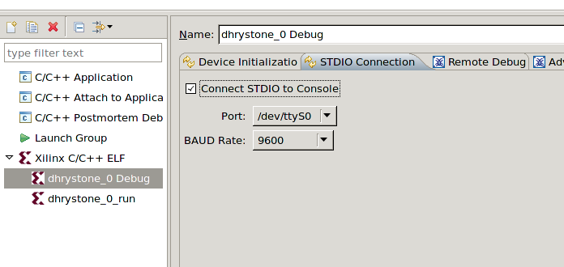

Specifying STDIO connections
To use the SDK console as STDIO for your application, do the following:
- In the C/C++ Projects view, select a project.
- Select Run > Run Configurations or Run > Debug Configurations.
- In the Configurations box, expand Xilinx C/C++ ELF.
- Select a run or debug configuration.
- Click the STDIO Connection tab.

- Select Connect STDIO to console
- If the BSP of your application uses Serial UART as the STDIO peripheral, specify the serial port to use on your host machine and BAUD rate.
- If the BSP of your application uses MDM as the STDIO peripheral, select JTAG UART as the port type.
- Click Apply to save the settings.

Debug
overview
Debugging applications
Run overview
Profile overview

Creating or editing a run/debug/profile configuration
Debugging a program
Running a program
Profiling a program
Copyright © 1995-2010 Xilinx, Inc. All rights reserved.